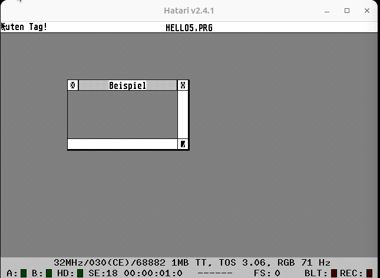

What
With the Atari ST sitting my living room, I get asked from time to time whether I’ve written software for it. I’ll explain the process for everyone that has a knack for retro computing like I do.
Contents
Background
The Atari ST uses the Motorola 86k processor. It’s 40 years old and differs substantially from modern hardware, but is also a lot easier to program directly.
To make things easier there are a lot of very well functioning emulators for the Atari that allow working on software from your regular PC. The binaries can then be transferred to the real machine afterwards.
Additionally there are options to cross-compile code from Windows or Linux for the Atari ST. The cross-compiled binaries can be tested in that same emulator and later be transferred onto the real machine.
Since the Atari ST came out in ‘85 and we have internet now, we can easily find software ROM images online and can use easier methods to transfer software to the Atari instead of floppy disks like serial cables or SD-cards (see SD-Cards). Writing software on the machine itself has also become much more pleasant with the ability to connect modern peripherals (see Keyboard/Mouse and VGA Monitors).
I remember writing software for the Atari ST as a kid with Omikron Basic. Later, during my studies, I used Turbo C and have cross-compiled for the Motorola 86k from Linux. For GUI applications there is the “Resource Construction Set” (GEM RCS) that allows drawing user interfaces and exporting them as loadable .c/h sources/headers. I remember writing a small graphical calculator that uses a stack and reverse polish notation to solve algebraic equations, but I’ve lost the source code for it.
There are different options to writing software for the Atari ST. I’ll get into how some of them work below.
How
Emulators
To quickly try software out it makes sense to install an emulator
Installing an Emulator
On Ubuntu 23.10 this is easily done by installing Hatari from the official packages repositories.
sudo apt install hatari
I’m currently running Hatari v2.4.1
ROM
Hatari requires a “The Operating System” (TOS) ROM to boot. I’ve tried different versions found online and settled for the german version of TOS 3.06.
TOS 4.92 (md5: 941baac767269649f92f7918dd5740b8)
Some Versions like TOS 4.92 don’t work for me. Hatari switches to Falcon mode, then crashes
unzip tos492.zip
sudo cp tos492/Tos492.img /usr/share/hatari/tos.img
TOS 3.06de (md5: 066f39a7ea5789d5afd59dd7b3104fa6)
Other versione like TOS 3.06de work well. The only downside is that it switches to Atari TT mode, but that usually only means you may need to set a different screen resolution inside TOS.
unzip tos306de.zip
sudo cp tos306de/tos306de.rom /usr/share/hatari/tos.img
The Atari ST Mega I have has only a monochrome monitor, but with more resolution. That can be changed in the settings within TOS.
Loading Software
Next we will need to load software from floppy disk images. The F12 will bring up Hatari’s main menu.
From that menu we can select the floppy disk image of, for instance, Omikron Basic (“omkbsc303.st”).
The floppy disk can then be opened within TOS and “OM-BASIC.PRG” can be launched.
Long loading times and frequent crashes add to the realism. Computing at that day and age was not as stable as it is today.
People seeing this on the screen with the machine completely unresponsive, similar to a bluescreen on Windows, is what coined the term “it bombed”
Compilers and Interpreters
In order to write code on the Atari we need compilers or at least interpreters. There are a few options.
Omikron Basic
Omikron Basic was a very popular interpreter for the BASIC programming language at the time.
It’s the first programming language I’ve programmed in and so I know first hand that it’s very easy to learn.
I don’t have a working copy of the interpreter, but the manual accompanying the software is available to read online at the internet archive [1].
Seeing the book I vaguely remember the syntax. As a kid I would write hard-coded text adventures similar to this (untested, consider it pseudo-code):
00 K$="0"
01 PRINT "A person stands in a room. There is a desk and a door. On the desk there is a key. What would you like to do?"
02 INPUT "1) try to open the door, 2) pick up the key";A$
03 IF A$="1" THEN
04 IF K$="0" THEN
05 PRINT "The door appears to be locked"
06 GOTO 01
07 ELSE
08 PRINT "The door opens. You are now in Room 2"
09 GOTO 15
10 ENDIF
11 ELSE
12 PRINT "The key is now in your pocket"
13 K$="1"
14 ENDIF
15 PRINT "You have entered room 2"
Borland Turbo C
The Turbo C compiler is better suited for serious development on the Atari.
Turbo C for Atari ST v2.0 (1990)(Borland)(Disk 1 of 3) (md5sum: 2ef0301356fae5535c2622bc6ddd180d)
To run it, within Hatari, I insert the disk image in drive A. Additionally I create a blank disk image in the floppy disk menu and insert that into drive B. This is where we can store our code.
After launching Turbo C we can create a new file in the Menu under “File -> New”.
When writing C-Code void main() { in German TOS with a german keyboard layout you might encounter a problem with curly braces. The key isn’t properly mapped in Hatari. Fortunately is a known issue [2] and there is a way around this.
for opening curly bracies
[Right Alt] + [Right Shift] + [Ö]
for closing curly braces type
[Right Alt] + [Right Shift] + [Ä]
for a backslash
[Right Alt] + [Right Shift] + [Ü]
For saving [CRTL] + [S] actually works the same as in most applications today.
Not thate under “Compiler” you can manually compile and assemble, but it is quicker to run code by using “Project” -> “Run”. That will automatically save first, then compile and run.
The following code will work.
Note that
- the standard library was already called
stdio.cin the 80s - the main function should return a ‘0’ return code, otherwise Turbo C will assume an error.
- and with
getchar()I’m making sure the console stays open so we can see what we have printed to the screen.
Cross-Compiling
Being able to write software on the Atari like it’s 1985 is nice. Writing software in an emulator is already a lot more convenient. But the best way to write software is on a modern operating system, cross-compile it and then run it on either the emulator or the real Atari.
A cross-compile toolchain for m86k-atari exists ready-made [3]. The approach to building such a toolchain is similar to what I’ve done for my CustomOS (see Cross-Compiler for the CustomOS).
The “m68k-atari-mint cross-tools” adds the tools to produce compatible binaries for the Atari ST.
Setup Cross-Compiler
There are even ready made packages in apt for Ubuntu [4].
On my Ubuntu 23.10:
sudo add-apt-repository ppa:vriviere/ppa
sudo apt install cross-mint-essential
Write some code
Similar to the example above we can write:
#include <stdio.h>
int main() {
printf("cross-compile test\n");
getchar();
return 0;
}
Compile it
Compiling is the same as with the regular gcc compiler.
m68k-atari-mint-gcc test.c -o test.prg
Copy compiled binary into Hatari
Now we need to transfer that binary to Hatari to read. Luckily the Hatari emulator makes this super convenient.
Under hard disks in Hatari there is an option “GEMDOS drive”.
There we can map a folder from our host operating system into the Atari ST TOS.
Running the code
By clicking on the binary we can run it and see our message being printed at the top of the screen.
Progress
Graphical User Interfaces
With “Application Environment Services” (AES) and “Virtual Device Interface” (VDI) we can build multi-window applications such as this code I wrote some time around June 2011.
I have a vivid memory of having extended that code to a full-blown calculator using “reverse polish notation” [5] under the hood to solve algebraic equations, but I can’t find the code anymore. Maybe it was all a dream.
Either way GUI programming on Atari ST is not that much different than it is today.
Editors for Graphical User Interfaces
The aforementioned “Resource Construction Set” (GEM RCS) can be used to draw a user interface. The generated code from that editor can then be included into your own code.
Usually, even today with large application frameworks such as Qt, the user interface editors (like QtCreator) are generally not perfectly reliable and developers usually drop down to custom code here and there anyway. We then end up with a hard to maintain mix and are often better off just writing the entire GUI from scratch - though these UI editors may be helpful when working in a cross-functional team with low/no-code team members like designers.
I usually prefer writing UIs in procedural-style.
Creating Windows with AES and VDI
To write a simple multi-window user interface for TOS we first need to include the required headers and set some defines. Note that these defines are in a predefined order that is expected by the libraries we’re using.
#include <aes.h>
#include <vdi.h>
#include <stdio.h>
#define DESK 0
#define W_KIND NAME|CLOSER|FULLER|MOVER|SIZER
#define EV_KIND MU_MESAG|MU_TIMER|MU_KEYBD
typedef enum {
FALSE,
TRUE
} boolean;
For handling the window we’ll need close, draw, (handle) event and resize functions that do what their names imply.
boolean window_init();
void window_close(int);
void window_draw(int, int, int, int, int);
void window_event();
void window_resize(int, int, int, int, int);
Some variable to keep track of current state
boolean fertig = FALSE;
int npuffer[8];
int window_handle;
boolean window_fullscreen;
int window_x, window_y, window_w, window_h;
A main loop that handles keyboard and mouse events.
int main() {
int event = 0;
int mouse_x, mouse_y, mouse_button, mouse_state, mouse_click;
int keyboard_code;
printf("Guten Tag!");
if(window_init() == FALSE) {
printf("Open window failed");
return 0;
}
while(fertig == FALSE) {
// -- mouse event timer (1000ms)
event = evnt_multi(
EV_KIND, 1, 1, 1, 0, 0, 0, 0, 0, 0, 0, 0, 0, 0,
npuffer, 1000, 0, &mouse_x, &mouse_y,
&mouse_button, &mouse_state, &keyboard_code, &mouse_click);
// -- start drawing
wind_update(BEG_UPDATE);
if(event & MU_MESAG) {
if(npuffer[0] >= WM_REDRAW && WM_NEWTOP >= npuffer[0]) {
window_event();
} else {
if(event & MU_TIMER) {
// -- one second passed
}
if(event & MU_KEYBD) {
// -- keyboard event
}
}
}
// -- handle events
wind_update(END_UPDATE);
}
return 0;
}
a function that creates a window
boolean window_init() {
int nwindow, xdesk, ydesk, wdesk, hdesk;
wind_get(DESK, WF_WORKXYWH, &xdesk, &ydesk, &wdesk, &hdesk);
if((nwindow = wind_create(W_KIND, xdesk, ydesk, wdesk, hdesk)) < 0) {
printf("Failed opening window");
return(FALSE);
}
// -- turn mouse off
graf_mouse(M_OFF, 0);
wind_set(nwindow, WF_NAME, "Beispiel", 0, 0);
wind_open(nwindow, wdesk / 10, hdesk / 10, wdesk / 3, hdesk / 3);
wind_get(nwindow, WF_WORKXYWH, &window_x, &window_y, &window_w, &window_h);
window_handle = nwindow;
window_fullscreen = FALSE;
// -- turn mouse on
graf_mouse(M_ON, 0);
// -- set cursor to arrow (instead of bee)
graf_mouse(ARROW, 0);
return TRUE;
}
one that closes a window
void window_close(int window_id) {
int x, y, w, h;
wind_get(window_id, WF_CURRXYWH, &x, &y, &w, &h);
graf_shrinkbox(0, 0, 0, 0, x, y, w, h);
wind_close(window_id);
wind_delete(window_id);
}
resizes a window
void window_resize(int window_id, int x, int y, int w, int h) {
wind_set(window_id, WF_CURRXYWH, x, y, w, h);
wind_get(window_id, WF_WORKXYWH, &window_x, &window_y, &window_w, &window_h);
}
draws the window contents (empty implementation here)
void window_draw(int window_id, int x, int y, int w, int h) { }
and the window event loop that triggers window_draw and window_resize as expected.
void window_event() {
switch(npuffer[0]) {
case WM_REDRAW:
window_draw(npuffer[3], npuffer[4], npuffer[5], npuffer[6], npuffer[7]);
break;
case WM_CLOSED:
window_close(window_handle);
fertig = TRUE;
case WM_MOVED:
case WM_SIZED:
window_resize(npuffer[3], npuffer[4], npuffer[5], npuffer[6], npuffer[7]);
break;
case WM_TOPPED:
case WM_NEWTOP:
wind_set(npuffer[3], WF_TOP, 0, 0, 0, 0);
wind_get(npuffer[3], WF_WORKXYWH, &window_x, &window_y, &window_w, &window_h);
break;
case WM_FULLED:
if((window_fullscreen ^= TRUE))
wind_get(npuffer[3], WF_FULLXYWH, &npuffer[4], &npuffer[5], &npuffer[6], &npuffer[7]);
else
wind_get(npuffer[3], WF_PREVXYWH, &npuffer[4], &npuffer[5], &npuffer[6], &npuffer[7]);
wind_get(npuffer[3], WF_WORKXYWH, &window_x, &window_y, &window_w, &window_h);
window_resize(npuffer[3], npuffer[4], npuffer[5], npuffer[6], npuffer[7]);
break;
}
}
Conclusion
Developing software for Atari ST is actually easier nowadays, than it was in the past.
There are many reasons for this. We now have…
- easy access to many compilers and software
- much more reliable and cheaper storage systems
- emulators that can be used to much more quickly test and debug the software we write
- emulatulation with more memory and disk space than the original Atari ever had
- computers with much more screen resolution and better multi-tasking abilities
- improved peripherals - better keyboards and mice
- much quicker compilers and much more verbose cross-compile chains
- source code management like Git repos to keep track of changes and diff between code
- access to now open-sourced Atari ST software that can be found all over GitHub by looking for function signatures
- and for me, personally, much more knowledge of software development, than I had in the past.
All of that makes it much more enjoyable and easy to write software for the Atari ST.
1] https://archive.org/details/OMIKRON_BASIC_Interpreter_v3.5_German_1991/mode/2up 2] https://github.com/jeremyramin/terminal-plus/issues/137 3] http://vincent.riviere.free.fr/soft/m68k-atari-mint/ 4] http://vincent.riviere.free.fr/soft/m68k-atari-mint/ubuntu.php 5] https://en.wikipedia.org/wiki/Reverse_Polish_notation